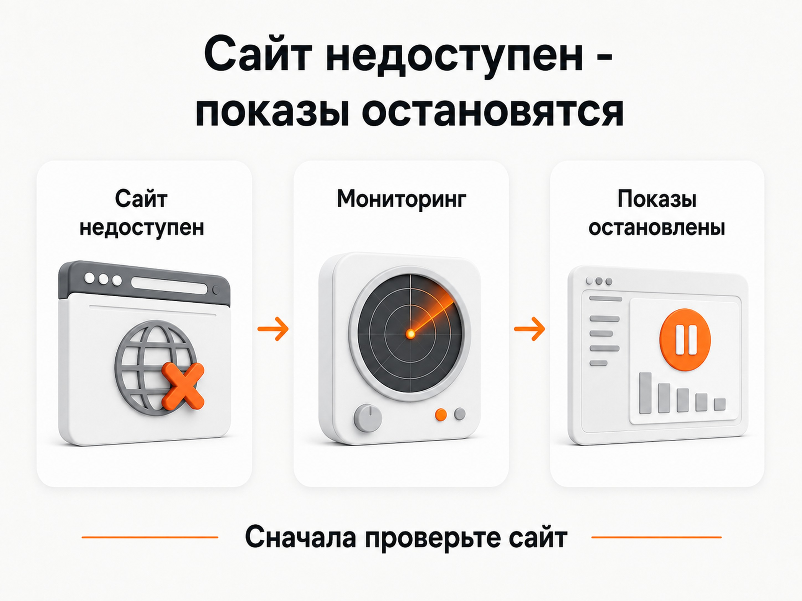
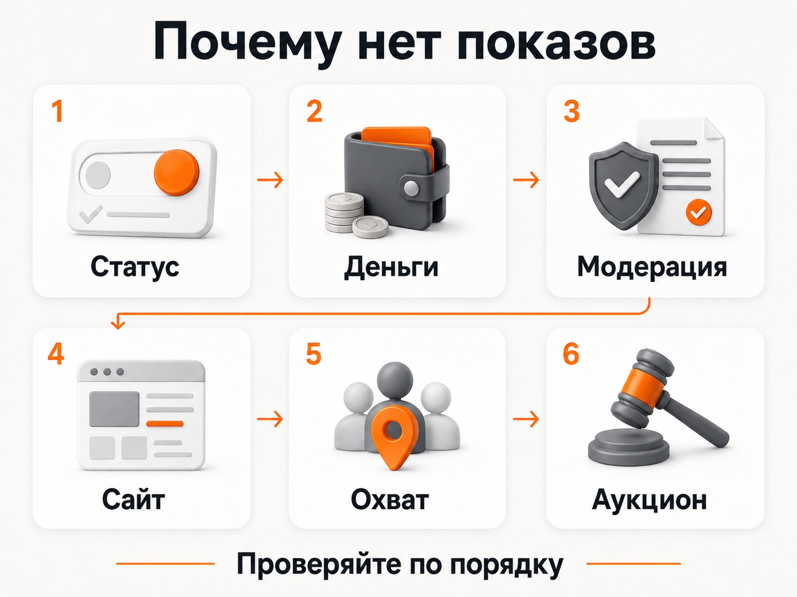

Блог о платном трафике
Почему нет показов в Яндекс Директе
Разбираю, почему реклама в Яндекс Директе не показывается или внезапно перестала работать.
Если в Яндекс Директе нет показов, причина обычно находится в одном из трех мест: кампания фактически остановлена, настройки слишком сильно ограничивают рекламу или вы не проходите в аукцион.
При нормально работающей кампании, где есть деньги, объявления прошли модерацию, сайт доступен, а аудитория не зажата чрезмерными ограничениями, устойчивый ноль показов - ненормальная ситуация. Нужно искать конкретный стоп-фактор.
Но сначала стоит разделить две совершенно разные проблемы:
Во втором случае реклама может работать совершенно нормально.
Сначала убедитесь, что показов действительно нет
Я бы не проверял работу рекламы постоянным вводом своих ключевых запросов в Яндексе.
Рекламная выдача персонализируется. Яндекс учитывает действия пользователя, cookies, настройки аккаунта и другие сигналы. Кроме того, Директ не гарантирует рекламодателю постоянный показ на определенной позиции. Поэтому отсутствие собственного объявления в конкретной поисковой выдаче еще не говорит о проблеме с кампанией.
Проверять нужно статистику.
Откройте кампанию или Мастер отчетов и посмотрите:
Самые актуальные данные Яндекс рекомендует смотреть именно в Мастере отчетов, поскольку разные разделы статистики могут обновляться с разной периодичностью.
Если в отчете действительно стоит 0 показов, можно переходить к диагностике.
Проверьте статус кампании, групп и объявлений
Первое, что я проверяю при полном отсутствии показов, - не настройки рекламы, а ее фактический статус.
Кампания может выглядеть настроенной, но внутри окажется остановленной группа или объявление.
Посмотрите:
Отдельная ситуация возникает после модерации. Некоторые объявления во время проверки могут быть остановлены. После успешного прохождения модерации они могут остаться в статусе остановленных, и показы потребуется включить вручную.
После запуска или существенного изменения настроек реклама также не всегда появляется мгновенно. Поэтому если кампанию только что включили, не нужно через несколько минут полностью перестраивать ее настройки.
Проверьте баланс и ограничения бюджета
Следующая очевидная причина - деньги.
Проверьте остаток на общем счете и ограничения бюджета кампании. Положительный баланс аккаунта сам по себе еще не означает, что конкретная кампания может продолжать показы.
Показы могут остановиться, если достигнуто установленное ограничение общего счета.
Проблемой может быть и соотношение бюджета со стоимостью трафика.
Например, если недельного бюджета фактически хватает на несколько дорогих кликов, система может показывать рекламу крайне редко. Это особенно заметно в конкурентных тематиках.
[Внутренняя ссылка: статья «Прогноз бюджета Яндекс Директ: как рассчитать расходы, клики и заявки»]
Проверьте модерацию и ограничения тематики
Фраза «кампания включена» еще не означает, что все объявления допущены к показу.
Откройте объявления и проверьте результаты модерации. Проблема может относиться:
Если объявление отклонено, Директ показывает причину и предлагает исправить материал либо отправить его на повторную проверку. Для некоторых тематик действуют дополнительные рекламные и законодательные ограничения.
Поэтому при нуле показов всегда сначала смотрите предупреждения системы, а уже потом начинайте менять семантику и ставки.
Проверьте, не остановил ли рекламу мониторинг сайта
Это одна из причин, которую легко пропустить.
В Яндекс Директе есть мониторинг доступности сайта. Если робот определяет, что сайт недоступен, объявления могут автоматически остановиться. После восстановления сайта показы должны возобновиться.
Получается простая ситуация:
**реклама настроена правильно -> сайт временно упал -> мониторинг остановил объявления -> в статистике пропали показы.**
При этом владелец бизнеса может даже не знать, что ночью или утром хостинг некоторое время не отвечал.
Проверьте:
Иногда сайт уже работает, но показы еще не восстановились. Роботу требуется повторно проверить доступность страницы.

Проверьте расписание и даты кампании
Если реклама должна работать, а показов нет именно сейчас, посмотрите временной таргетинг.
Например, кампания настроена только:
Проверяя ее вечером или в выходной, вы закономерно увидите отсутствие новых показов.
Одновременно проверьте даты начала и окончания кампании. Можно случайно поставить будущую дату старта или оставить дату завершения, после которой продвижение автоматически остановится.
Ставка или ограничения стратегии слишком низкие
Если технически все работает, следующая проверка - можете ли вы вообще участвовать в аукционе.
При ручном управлении причиной могут стать слишком низкие ставки. При недостаточной ставке объявление может получать крайне мало показов или не получать их вовсе в нужных условиях.
Но проблема бывает и в автоматических стратегиях.
Например, рекламодатель пытается получить заявку по цене, которая заметно ниже реальной для ниши. Алгоритм получает слишком жесткое ограничение и просто не находит достаточного количества подходящих аукционов.
Похожая ситуация возникает при чрезмерно низком ограничении средней стоимости клика.
Если после снижения целевой цены конверсии или стоимости клика реклама практически остановилась, я бы сначала проверял именно стратегию, а не объявления.
Вы слишком сильно ограничили аудиторию
Иногда рекламодатель пытается сделать рекламу максимально точной и постепенно лишает ее практически всего охвата.
Количество показов уменьшают:
Это особенно характерно для ретаргетинга. Если сайт получает немного посетителей, а вы создаете маленький сегмент и добавляете к нему еще несколько ограничений, аудитории может просто не хватить.
Проверьте сам спрос
Ноль или очень небольшое количество показов иногда объясняются проще: ваши условия показа почти никто не выполняет.
Например, вы взяли несколько длинных низкочастотных ключевых фраз, ограничили их одним небольшим городом и добавили жесткие минус-фразы.
Формально кампания работает. Ошибок нет. Но рекламироваться практически некому.
Если показы есть, но их очень мало, проверяйте:
При этом расширять все настройки сразу не нужно. Иначе вы получите показы, но перестанете понимать, какое именно ограничение создавало проблему.
Если Яндекс Директ работал, а потом показы пропали
Ситуация «Яндекс Директ перестал работать» немного проще для диагностики, потому что раньше кампания уже получала трафик.
Сначала нужно посмотреть, что изменилось непосредственно перед падением.
Я бы проверял в таком порядке:
Если падение произошло сразу после изменения настроек, начинать диагностику логичнее именно с этого изменения.
Быстрый чек-лист, если реклама не показывается
Чтобы не менять настройки хаотично, идите сверху вниз:

Если все пункты в порядке, кампания давно прошла активизацию, аудитория достаточно широкая, деньги есть, а в отчетах по-прежнему абсолютный ноль, уже имеет смысл обращаться в поддержку Яндекс Директа.
Если же показы идут, но их просто меньше, чем вам хотелось бы, это другая задача. Там нужно разбирать объем спроса, ставки, охват и структуру кампании, а не искать техническую блокировку.
Аудит Яндекс Директ: что проверить и как найти проблемы в рекламе
Главное
Если в Яндекс Директе нет показов вообще, я бы не начинал с переписывания объявлений или добавления сотни новых ключевых фраз.
Сначала нужно исключить стоп-факторы: статусы, деньги, модерацию, мониторинг сайта, расписание и даты. Потом проверить ставки и стратегию. И только после этого переходить к охвату, семантике и спросу.
А если единственная проблема в том, что вы не находите собственное объявление в поисковой выдаче, это еще не проблема. Работу рекламы нужно оценивать по статистике Директа, а не по результатам собственного поиска.